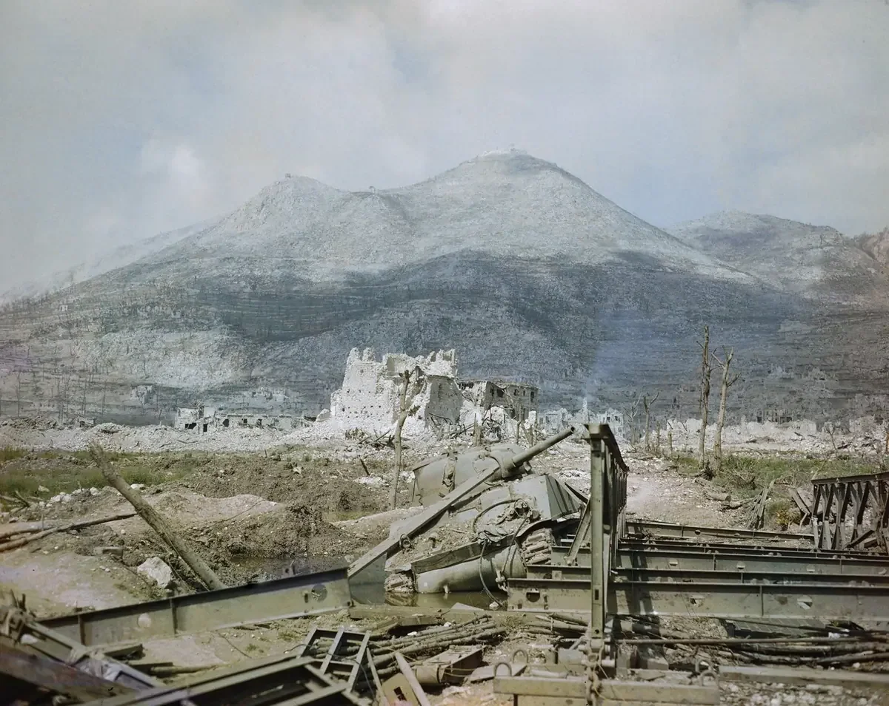
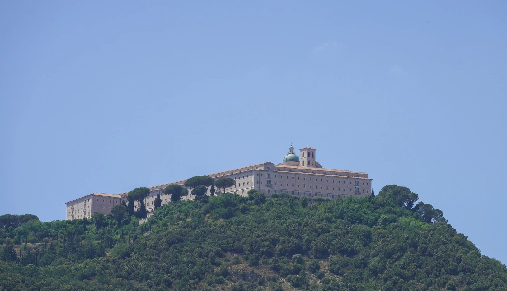
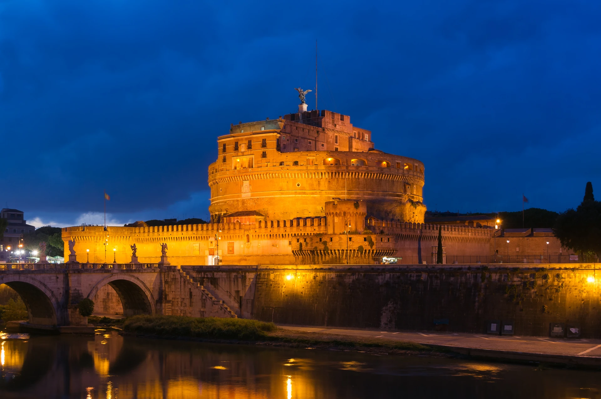
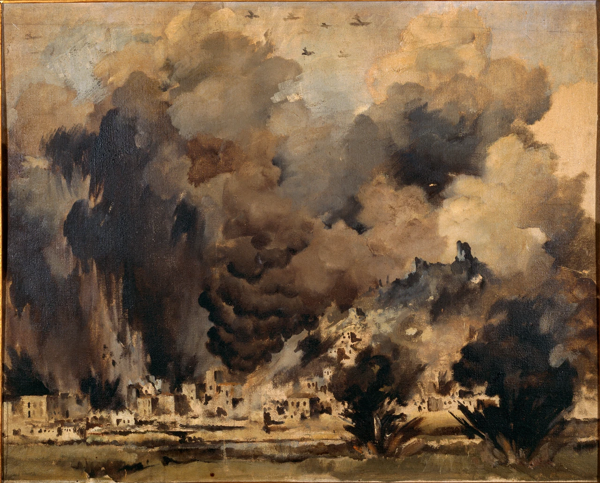

아직 펼치지 않은 카드흩어지고 사라질 뻔한 책 · 3몬테카시노의 책들1,400년 된 수도원이 폭격으로 무너졌어요. 그런데 그 안의 책들은 어떻게 살아남았을까요?큰 수도원이 무너졌는데, 책들은 살아남았대. 어떻게 된 걸까?
1943년 10월 ~ 1944년 2월이탈리아 몬테카시노 → 스폴레토 → 로마
몬테카시노의 책들
1943년 가을, 이탈리아 몬테카시노 수도원의 책과 문서가 나무 상자 수백 개에 담겨 트럭으로 산을 내려갔어요. 상자들은 스폴레토를 거쳐 12월 8일 로마에 닿았고, 두 달 뒤 수도원에는 폭탄이 떨어졌어요. 지도 위에서 상자들이 간 길을 따라가 보세요.
산 위의 수도원에 책이 아주 많았대. 싸움이 다가오자 책을 상자에 담아 트럭으로 멀리 옮겼어. 그 길을 따라가 볼까?
검수 전 시안이에요(기준서 1판). 지도는 이 안내서가 그린 길잡이 그림이에요. 이 일을 두고 역사학자들의 평가가 갈려서, 누구의 기록인지 문장마다 밝혔어요. 장면에는 기록에 있는 것만 옮겼고, 상상은 ‘눈 감고 상상해 보기’에만 썼어요.
시안 확인용카드 단계 미리 보기
1
산 위의 도서관
몬테카시노의 도서관과 문서고는 수백 년 동안 한 공간에서 함께 자랐어요. 수도원과 대학이 함께 꾸린 기록 사업 MeMo는 둘이 ‘서로와 함께, 서로를 위해, 서로 안에서’ 살았다고 적어요. 독일 역사가 파울 프리돌린 케르는 이 문서고를 ‘세상에 견줄 곳이 몇 안 되는 참된 옛 문서의 보고’라고 했어요(MeMo · 이 안내서가 옮김).
1943년 10월 14일, 수도원에 낯선 손님이 찾아왔어요(필그리맵스). 전선이 다가오자 오스트리아 출신 장교 율리우스 슐레겔과 독일군 대위 막시밀리안 베커가 책과 문서를 옮기자고 아빠스 그레고리오 디아마레를 설득했어요(더 컨버세이션). 아빠스는 수도사들이 지켜보는 가운데 곧장 바티칸으로 보낸다는 조건을 걸었어요(필그리맵스).

아빠스는 수도원을 이끄는 수도원장이에요. 사진은 전쟁 뒤 옛 모습대로 다시 지은 오늘의 수도원이에요.
산꼭대기에 아주 오래된 수도원이 있어. 그 안에 책이 아주 많았대.
물어보기책이 7만 권이면, 얼마나 많은 걸까?
2
상자에 담긴 도서관
책과 문서는 나무 상자 수백 개에 담겼어요. 상자에는 ‘MC. BIBL.’(기념 도서관)이나 ‘MC. PRIV.’(개인 도서관)라고 적었고, 손으로 쓴 옛 책과 예배 책, 16~17세기 약방 물건까지 들어갔어요(MeMo). 손으로 쓴 옛 책만 1,200권이었다고 해요(필그리맵스).
슐레겔의 기록으로는 문서가 8만 점, 책이 7만 권이에요. 3주 동안 남은 수도사들과 피란민, 독일군이 트럭 100대로 상자 700여 개를 실어 날랐어요(더 컨버세이션). 아래에서 ‘다음 곳으로’를 눌러 상자들이 간 길을 따라가 보세요.
‘다음 곳으로’를 눌러 상자들이 간 길을 따라가 보세요.
몬테카시노스폴레토로마
지도는 이 안내서가 그린 길잡이 그림이에요(실제 거리와 다를 수 있어요).
산 위의 도서관이 로마에 닿았어요. 남은 상자들은 이듬해 2월과 3월에도 이어서 왔어요(MeMo).
문서고를 맡은 수도사 마우로 잉구아네스가 옮기는 일을 지켜보았어요(MeMo).
책을 상자에 담아서 트럭으로 옮겼어. 같이 따라가 보자!
물어보기트럭은 어디로 갔을까?
3
로마에 닿은 상자
산탄젤로성은 로마 테베레강 가, 바티칸 바로 옆에 있는 둥근 성이에요. 1943년 12월 8일 상자들은 이곳에 닿았고, 이틀 뒤 바티칸 도서관장 안셀모 알바레다에게 넘겨졌어요. 남은 상자들은 이듬해 2월과 3월에도 이어서 왔어요(MeMo).
수도원에는 나폴리 박물관들의 미술품도 맡겨져 있었어요. 1944년 영국 의회 기록에 따르면, 독일군은 바티칸에 넘겨준 일을 선전에 썼지만, 미술품 상자 187개 가운데 바티칸에 닿은 것은 172개였고 15개는 독일군이 가져갔어요(영국 의회 기록).

아빠스는 슐레겔이 한 일을 증언하는 라틴어 두루마리를 써 주었고, 수도사들은 그를 위해 미사를 드렸어요. 오스트리아 빈에는 그를 기리는 판이 있어요(필그리맵스). 더 컨버세이션은 이 일이 연합군을 깎아내리려는 선전의 한 부분이었는지도 물어요. 앞면에 적은 대로, 이 일을 보는 눈은 지금도 갈려요.
트럭이 로마의 둥근 성에 도착했어. 책들은 이제 안전한 곳에 있어.
물어보기수도사들은 책 상자가 무사히 도착해서 어떤 마음이었을까?
4
1944년 2월 15일
1944년 2월 15일, 연합군 폭격기들이 수도원에 폭탄 1,400톤을 떨어뜨렸어요. 지휘관들은 독일군이 수도원을 관측소로 쓴다고 보았지만, 뚜렷한 증거는 없었다고 뉴질랜드 국립기록원은 적어요(뉴질랜드 국립기록원).
수도원은 무너졌고, 17세기 말에 꾸민 큰 도서관 방도 무너졌어요. 그 방의 모습은 옛 수도사 에라스모 가톨라가 남긴 글로만 전해져요. 책들은 이미 그 방을 떠나 있었어요(MeMo).

그림은 뉴질랜드의 종군 화가 피터 매킨타이어가 그린 「몬테카시노 공습, 1944년 2월」이에요. 그는 카시노에서 소령이 되었어요. 뉴질랜드 국립기록원의 전쟁 미술 소장품이에요(뉴질랜드 국립기록원).
큰 폭탄이 떨어져서 산 위의 수도원이 무너졌어. 하지만 책들은 멀리 안전한 곳에 있었어.
물어보기무너진 수도원을 본 수도사들은 무엇을 떠올렸을까?
눈 감고 상상해 보기
1943년 가을, 몬테카시노의 마당. 망치 소리와 갓 자른 나무 냄새. ‘MC. BIBL.’이라고 적힌 상자가 하나씩 트럭에 오르고, 수도사들이 그 곁에서 지켜봐요. 산길을 내려가는 엔진 소리가 점점 멀어져요.
눈을 감아 봐. 뚝딱뚝딱 상자 만드는 소리. 책을 차곡차곡 담아서 트럭에 실어. 부릉부릉, 산길을 내려가!
나의 자리
무너질 것을 알았을 때, 나는 무엇을 가장 먼저 옮기고 싶을까요?
꼭 지키고 싶은 내 물건은 뭐야?
마음에 닿는 한 줄을 고르거나 직접 써 보세요. 한 줄을 남기면 이 자리의 도장이 찍혀요. 이 기기에만 저장돼요.
더 깊이
궁금한 칸만 펼쳐 읽어도 괜찮아요.
알고 보면
돌아온 길 책들은 전쟁 뒤 1947년 로마의 산 지롤라모 베네딕도회 수도원으로 옮겨졌고, 다시 지은 몬테카시노로 1955년에 모두 돌아왔어요(MeMo).
방 넷 1943년 전에는 문서고가 아래층의 큰 방 세 개를 썼어요. 전쟁 뒤 다시 지은 수도원에서는 손으로 쓴 옛 책을 그보다 작은 넷째 방에 두었어요(MeMo).
수도원 안의 미술품 몬테카시노에는 수도원의 보물 말고도 나폴리의 두 박물관, 아벨리노 근처 몬테베르지네 수도원, 로마의 키츠·셸리 기념관에서 맡긴 것들이 있었어요. 티치아노, 라파엘로, 브뤼헐, 레오나르도의 작품도 있었다고 해요(더 컨버세이션).
기록마다 다른 점
스폴레토의 어디였을까 MeMo의 문서고 이야기는 책과 문서가 먼저 ‘스폴레토의 성채(로카)’에 머물렀다고 적고, 도서관 이야기는 ‘스폴레토 근처 콜레 페레토’로 적어요. 앞면은 상자들이 ‘로마 산탄젤로성과 스폴레토의 성’으로 갔다고 적었어요.
몇 권이었을까 더 컨버세이션은 슐레겔의 기록을 따라 문서 8만 점·책 7만 권·상자 700여 개·트럭 100대로 적고, 필그리맵스는 책 7만 권과 손으로 쓴 옛 책 1,200권이 살아남았다고 적어요.
선의였을까, 선전이었을까 1943년 12월 31일 이탈리아 미술 담당 국장은 독일 당국에 고맙다는 편지를 썼어요. 그러나 1944년 영국 의회 기록은 독일군이 이 일을 선전에 썼고 미술품 상자 15개를 가져갔다고 적어요(더 컨버세이션 · 영국 의회 기록).
직접 가 보기
확인한 날 · 2026년 11월 18일 · 바뀌기 쉬운 정보라 정기적으로 다시 확인해요
몬테카시노 수도원은 지금도 관람객을 받아요. 수도원 누리집에는 11~3월 9시 30분~17시 30분, 4~10월 9시 30분~18시 30분으로 적혀 있어요. 바뀔 수 있으니 가기 전에 꼭 확인하세요.
로마의 산탄젤로성은 박물관이 되어 들어가 볼 수 있어요.
상자가 간 길 금박
지도 위 길을 몬테카시노에서 로마까지 따라가면 카드에 금박이 입혀져요.
몬테카시노에서 로마까지 길을 따라가기
아이와 함께 채색
아이와 함께 ‘영화처럼 보기’를 끝까지 보면 카드가 채색돼요.
아이와 함께 ‘영화처럼 보기’를 끝까지 보기
근거 보기 (7)
- MeMo(몬테카시노 수도원 · 카시노 대학 · 로마 사피엔차 대학 · 카타니아 대학): The Library of Montecassino: A Thousand-Year History — 1943년 가을 나무 상자 수백 개(MC. BIBL. · MC. PRIV.), 옛 책·예배 책·16~17세기 약방 물건, 스폴레토 근처 콜레 페레토와 다이히만, 12월 8일 로마, 산탄젤로성과 바티칸, 1944년 2·3월의 상자, 1947년 산 지롤라모, 1955년 돌아옴, 17세기 말 도서관 방이 무너짐, 가톨라의 글
- MeMo: The roots of the Abbey of Montecassino run deep through written records — 도서관과 문서고가 함께 산 말, 케르의 말, 잉구아네스가 지켜봄, 로카 디 스폴레토, 12월 8일 로마, 이틀 뒤 알바레다에게, 1943년 전의 방 셋과 전쟁 뒤 넷째 방
- The Conversation(2020): Second World War fight to protect Monte Cassino Abbey was a battle over Europe’s history — 1943년 10월 슐레겔과 베커, 아빠스 디아마레, 문서 8만·책 7만(슐레겔), 3주·상자 700여 개·트럭 100대, 바티칸(산탄젤로성)과 스폴레토(로마 북쪽 100km), 나폴리 박물관 등의 미술품, 1943년 12월 31일 감사 편지, 선전이었는지의 물음
- Pilgrimaps: The forgotten hero who saved Montecassino — 1943년 10월 14일 방문, 수도사들이 지켜보는 가운데 바티칸으로라는 조건, 책 7만 권과 손으로 쓴 옛 책 1,200권, 라틴어 두루마리와 미사, 빈 포코르니가세 5번지의 판
- 영국 의회 기록(Hansard) 1944년 10월 3일, 서면 답변(J. 그리그) — 독일군이 로마로 옮기고 바티칸에 넘겨준 일을 선전, 상자 187개 가운데 172개만 바티칸에, 15개는 독일군이 가짐, 나폴리 등 남이탈리아의 미술품
- 뉴질랜드 국립기록원(위키미디어 공용): Peter McIntyre, Air raid at Monte Cassino, February 1944 — 2월 15일 폭탄 1,400톤, 관측소라고 보았으나 뚜렷한 증거 없음, 매킨타이어(공식 종군 화가, 카시노에서 소령), 전쟁 미술 소장품
- 위키미디어 공용: 몬테카시노 수도원(오늘) · 산탄젤로성 · 스폴레토 성채
그림·사진·소리 출처
‘처음 만나는 기독교 문화’의 깊은 카드예요. 카드 단계와 남긴 글은 이 기기에만 저장돼요.